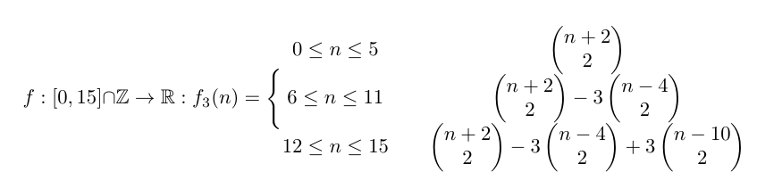

This project was one of my favourites because it was done from scratch and wasn't part of a class or anything. I did it just for fun. It started out as sort of a competition between me and a friend of mine who has been a web developer for several decades. We wanted to see who could write code that would solve a problem faster. The problem originated from the game Pokémon GO, which we both play. In this game, you have a certain probability of getting particular stats on a pokémon. If you're familiar with the game, I'm referring to the IV percentage you'd get from a raid pokémon. For example, what's the probability that the pokémon you get from a raid has 82% IVs. Since there are several IV combinations that result in 82%, the obvious approach would be to list all of the possible combinations and count which ones add up to the correct percent. But this is the brute force approach and becomes intractable for large numbers of possibilities. Put in terms of math, this is equivalent to determining the probability that three integer-valued variables, x, y, z, in the range [0,5] sum to a particular number n in [0,15] I knew my friend would pull out all the stops to optimize his code, but I also knew he would take the brute force approach. So I set out to find a more fundamental approach. After a week or two of trying different things, I managed to find a function that always gave the correct result using a small amount of operations. I then generalised the function to include the range [0,M] instead of [0,5] for each variable. And then I generalised it again to include any number of variables. Pictured are the original function solving the problem, the two generalisations, the runtime comparison between my code using the function and my friend's code using brute force, and some example code in java.
